방송통신기사 (2021-10-02 기출문제)
1과목: 디지털 전자회로
1. 다음 회로에서 제너 다이오드에 흐르는 전류는? (단, 제너 다이오드의 파괴 전압은 10[V] 이다.)
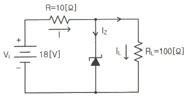
- 0.5[A]
- 0.7[A]
- 1.0[A]
- 1.7[A]
(정답률: 60%)

2. 다음 그림에서 1차측과 2차측의 권선비가 5:1 일 때 1차측의 입력전압 Vrms = 120[V] 이다. 다이오드가 이상적이고 리플이 작다고 가정하면 직류 부하전류는 약 얼마인가?
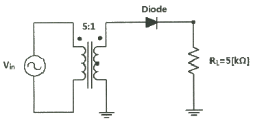
- 1.7[mA]
- 3.4[mA]
- 5.1[mA]
- 6.8[mA]
(정답률: 41%)
3. 다음과 같은 블록도에서 출력으로 나타나는 파형이 적합한 것은?
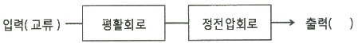
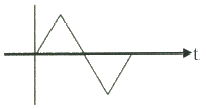
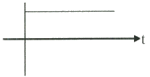
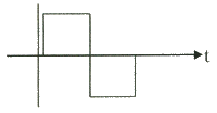
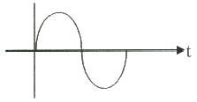
(정답률: 78%)
4. 다음 중 캐스코드 증폭기에 대한 설명으로 틀린 것은?
- 입력단은 공통베이스, 출력단은 공통이미터로 구성된 증폭기이다.
- 전압 궤환율이 매우 적다.
- 공통베이스 증폭기로 인해 고주파 특성이 양호하다.
- 자기 발진 가능성이 매우 적다.
(정답률: 58%)
5. 다음 그림과 같은 회로에서 결합계수가 0.5이고, 발진주파수가 200[kHz]일 경우 C의 값은 얼마인가? (단, π = 3.14 이고, L1=L2=1 [mH] 로 가정한다.)
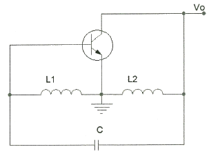
- 211.3[uF]
- 211.3[pF]
- 422.6[uF]
- 422.6[pF]
(정답률: 81%)
6. 다음 그림과 같은 발진회로에서 높은 주파수의 동작에 적절한 발진회로 구현을 위한 리액턴스 조건은 무엇인가?
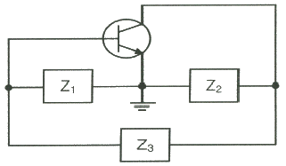
- Z1 = 용량성, Z2 = 용량성, Z3 = 용량성
- Z1 = 유도성, Z2 = 유도성, Z3 = 유도성
- Z1 = 유도성, Z2 = 용량성, Z3 = 용량성
- Z1 = 용량성, Z2 = 용량성, Z3 = 유도성
(정답률: 84%)
7. 다음 중 연산증폭기의 응용회로가 아닌 것은?
- 부호변환기
- 배수기
- 교류전류 플로워
- 전압-전류 변환기
(정답률: 60%)
8. 다음 차등증폭 회로에서 주어진 전압 및 전류 저건에 맞는 직류 IV-곡선으로 맞는 것은? (단, IRC1=IRC2=3.25[mA], VE= 0.7[V] 이다.)
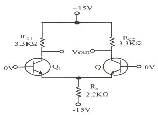
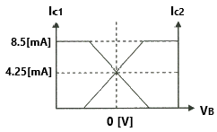
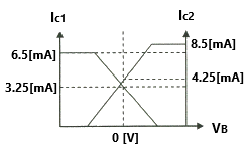
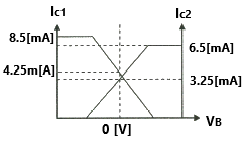
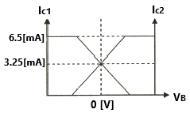
(정답률: 72%)
9. 다음 중 OP-AMP 성능을 판단하는 파라미터로 관련이 없는 것은?
- Vio(입력 오프셋 전압)
- CMRR(동상 신호 제거비)
- IB(입력 바이어스전류)
- PIV(최대 역 전압)
(정답률: 54%)
10. 발진회로의 출력이 직접 부하와 결합되면 부하의 변동으로 인하여 발진주파수가 변동된다. 이에 대한 대책이 아닌 것은?
- 정전압 회로를 사용한다.
- 발진회로와 부하 사이에 완충증폭기를 접속한다.
- 발진회로를 온도가 일정한 곳에 둔다.
- 다음 단과의 결합을 밀 결합으로 한다.
(정답률: 58%)
11. 다음 중 아날로그 신호로부터 디지털 부호를 얻는 방법이 아닌 것은?
- PM(Phase Modulation)
- DM(Delta Modulation)
- PCM(Pulse Code Modulation)
- DPCM(Differential Pulse Code Modulation)
(정답률: 58%)
12. 포스터 실리 검파 회로와 비검파 회로와의 검파 감도 비는?
- 1:3
- 3:1
- 1:2
- 2:1
(정답률: 60%)
13. FM수신기에 사용되는 주파수변별기의 역할은?
- 주파수 변화를 진폭 변화로 바꾸어 준다.
- 진폭 변화를 위상 변화로 바꾸어 준다.
- 주파수체배를 행한다.
- 최대주파수편이를 증가시킨다.
(정답률: 56%)
14. 다음 중 4진 PSK에서 BPSK와 같은 양의 정보를 전송하기 위해 필요한 대역폭은?
- BPSK의 0.5배
- BPSK와 같은 대역폭
- BPSK의 2배
- BPSK의 4배
(정답률: 55%)
15. 다음 중 저역 통과 RC회로에서 시정수가 의미하는 것은?
- 응답의 위치를 결정해준다.
- 입력의 주기를 결정해준다.
- 입력의 진폭 크기를 표시한다.
- 응답의 상승속도를 표시한다.
(정답률: 62%)
16. 다음 회로는 무엇을 가리키는가?
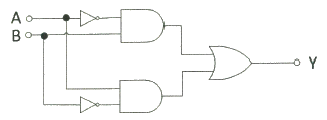
- 배타적 논리합 회로(Exclusive-OR)
- 감산기(Subtractor)
- 반가산기(Half adder)
- 전가산기(Full adder)
(정답률: 50%)
17. RS 플립플롭 회로의 출력 Q 및
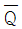
는 리셋(Reset) 상태에서 어떠한 논리 값을 가지는가?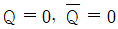
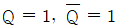
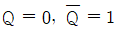
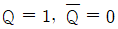
(정답률: 68%)
18. 다음 중 파형 조작 회로에서 클리퍼(Clipper)회로에 대한 설명으로 옳은 것은?
- 입력 파형에서 특정한 기준 레벨의 윗부분 또는 아랫부분을 제거하는 것
- 입력 파형에 직류분을 가하여 출력 레벨을 일정하게 유지하는 것
- 입력 파형중에 어떤 특정 시간의 파형만 도출하는 것
- 입력의 Step전압을 인가하는 것
(정답률: 65%)
19. 다음 그림과 같은 회로의 논리 동작으로 맞는 것은?
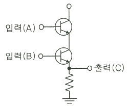
- OR
- AND
- NOR
- NAND
(정답률: 68%)
20. 다음 중 멀티바이브레이터의 동작 특성에 대한 설명으로 틀린 것은?
- 비안정 멀티바이브레이터는 한쪽의 상태에서 다른 쪽의 회로가 가진 시정수에 따라 교번 발진을 계속한다.
- 단안정 멀티바이브레이터는 외부로부터의 트리거에 의해 상태 전이를 일으켜도 일정한 시간이 지나면 다시 원래의 상태로 되돌아온다.
- 쌍안정 멀티바이브레이터는 입력펄스가 공급되기 전까지는 그 상태를 계속 유지한다.
- 쌍안정 멀티바이브레이터는 1개의 펄스가 공급될 때 2개의 출력펄스를 가져 펄스의 주파수를 높이는데 이용한다.
(정답률: 47%)
2과목: 방송통신 기기
21. 다음 중 카메라의 위치를 움직이지 않고 카메라 헤드만을 수평방향으로 회전하면서 촬영하는 것은?
- 패닝(Panning)
- 틸팅(Tilting)
- 달리(Dolly)
- 붐(Boom)
(정답률: 67%)
22. 비동기의 영상신호를 필드 또는 프레임 메모리에 기록하여 이것을 자국의 동기신호에 맞추어 읽어내는 장치는?
- TBC
- FS
- ADC
- DVD
(정답률: 37%)
23. 다음 스튜디오 설비의 음질보정장치 중 주파수 영역 컨트롤이 아닌 것은?
- 그래픽 이퀄라이져
- 리미터
- 필터
- 파라메트릭(Parametric) 이퀄라이져
(정답률: 41%)
24. 다음 중 방송 통신에 있어서 변조의 목적과 가장 거리가 먼 것은?
- 전자파의 송수신에 필요한 안테나의 크기를 줄이기 위해서이다.
- 하나의 통신로에 여러 신호를 동시에 전송할 수 있게 하기 위해 사용한다.
- 파장이 짧은 고주파 신호로 변조하게 되면 사용되는 부품이 소형화되어 장비가 소형화되고 경량화되는 장점이 있다.
- 송신기와 수신기의 구조를 간단히 하기 위해서이다.
(정답률: 40%)
25. 다음 중 디지털 음악 방송(Digital Sound Broadcasting)의 특징이 아닌 것은?
- 고품질 음성을 복수로 전송할 수 있다.
- 자동차와 같이 이동 수신시에 멀티패스나 페이딩에 비교적 강한 방식이다.
- ATSC 방송방식에 비해 전송 데이터 용량이 크므로 잡음이 없다.
- 음성은 물론 데이터나 화상의 전송이 가능하다.
(정답률: 66%)
26. 다음 중 디지털 방송 시스템의 수신부 구성요소는 어느 것인가?
- 소스 코딩
- 채널코딩
- 변조
- 역다중화
(정답률: 52%)
27. 다음 중 디지털 TV 방식이 아닌 것은?
- DVB
- ATSC
- NTSC
- ISDB-T
(정답률: 35%)
28. 다음 중 TV화면의 픽셀(Pixel)과 관련된 파라미터(Parameter)는?
- 변조도
- 증폭도
- 해상도
- 분포도
(정답률: 69%)
29. 다음 중 TV에서 활용되는 주사(Scanning) 방식이 아닌 것은?
- 수평주사
- 순차주사
- 비월주사
- 동기주사
(정답률: 38%)
30. 2,400[bps]의 디지털 신호를 전송시 한 번에 3[bit]의 신호를 전송할 경우 이는 몇 [baud]에 해당되는가?
- 200[baud]
- 800[baud]
- 6,400[baud]
- 7,200[baud]
(정답률: 74%)
31. 다음 중 위성 안테나의 종류로 부적합한 것은?
- 파라볼라(Parabola)
- 카세그리엔(Cassegrain)
- 오프셋 접시(Offset Dish)
- 야기(Yagi)
(정답률: 49%)
32. 디지털유선방송의 POD(Point Of Deployment) 모듈 장치에 관한 설명으로 틀린 것은?
- 시청자가 해당 서비스에 접근할 수 있는 CAS(Conditional Access System) 기능을 포함한다.
- 콘텐츠 보호를 위한 Copy Protection(복제방지) 기능을 포함하고 있다.
- POD는 셋탑박스(단말장치)에서 분리 또는 교체가 불가능한 형태가 되어야 한다.
- 시청자의 과금 정보 등이 셋탑박스에 입력되어 시청자와 관련된 사항을 관리하게 된다.
(정답률: 47%)
33. HFC망에 대한 설명으로 바르지 못한 것은?
- 상향 대역폭의 제한으로 양방향 서비스가 불가능하다.
- 현재 HFC망은 상향과 하향 대역폭이 비대칭이다.
- 비대칭 서비스인 인터넷, 영상분배서비스, VOD서비스에 적합하다.
- 5~42[MHz]를 상향주파수 대역으로 사용 가능하다.
(정답률: 48%)
34. IPTV에서 멀티캐스트 서비스 전송을 위한 필수 사항과 관련이 없는 것은?
- 데이터의 전송자와 받는 클라이언트가 멀티캐스팅이 가능한 라우터와 프로토콜이 있어야 한다.
- 방화벽이 있는 경우 멀티캐스트 트래픽의 재구성이 필요없다.
- 전송을 위해서는 인터넷 프로토콜을 지원해야 한다.
- 멀티캐스트 그룹에 합류하고 데이터를 받기 위해서는 IGMP(Internet Group Management Protocol)를 지원해야 한다.
(정답률: 45%)
35. 인터넷방송과 같은 TVAnytime 서비스의 특징이 아닌 것은?
- 시청자 입장에서 방송 스케줄과 채널이 상관없이 원하는 콘텐츠를 시청하게 된다.
- EPG와 웹 링크 서비스를 이용하여 제한적인 방송콘텐츠를 보게 된다.
- 메타데이터를 이용하여 보다 편리하게 콘텐츠를 선택 저장할 수 있다.
- 방송사와 콘텐츠 제공업체는 시청자의 시청 패턴이나 기호를 수집 분석하여 시청자 기호에 맞는 프로그램 추천이 가능하다.
(정답률: 62%)
36. 유선 브로드밴드(IP망 기반)를 통해 가입자에게 비디오를 전송하는 서비스를 총칭하며 PP, CP에게서 받은 프로그램을 인터넷망을 통하여 가입자에게 전송해 주는 뉴미디어 서비스는?
- CATV
- 위성TV
- IPTV
- MATV
(정답률: 74%)
37. 디지털 이동수신방송 기술로 방식별 전송방식과 변조방식이 틀린 것은?
- ATSC3.0 : OFDM과 16QAM
- DVB-H : VSB와 QPSK
- T-DMB : OFDM과 DQPSK
- MediaFLO : OFDM과 QPSK
(정답률: 36%)
38. 다음 중 SMPTE 259M 시리얼 디지털 신호 특성 규정으로 틀린 것은?
- Rise & Fall Overshoot : 진폭의 10[%] 이내(각 Edge에서)
- 리턴로스(Return Loss) : 최소 15[dB] 이상(5[MHz] ~ 클럭주파수)
- 진폭(Amplitude) : 800[mV] ± 10[%] 이내(Peak-peak로 측정시)
- Rise Time & Fall Time : 0.2[nesc] ~ 2.0[nesc]
(정답률: 54%)
39. 다음 중 음향신호 모니터링 장치가 아닌 것은?
- VU Meter
- PPM Meter
- Loudness Meter
- AU Meter
(정답률: 41%)
40. 디지털 펄스 신호 파형이 시간 축상에서 이상적인 위치를 벗어나는 현상은?
- 변조
- 증폭
- 복조
- 지터
(정답률: 60%)
3과목: 방송미디어 공학
41. 우리나라 HDTV 표준 방식은 ATSC(Advanced Television Systems Committee)에 대한 설명으로 옳지 않는 것은?
- Carrier는 Multi-Carrier이다.
- 변조방식은 8-VSB이다.
- 압축방식은 영상은 MPEG-2, 음향은 Dolby Ac-3이다.
- MPEG-2 TS를 사용한다.
(정답률: 40%)
42. 다음 중 다수의 부반송파를 이용하여 대역폭당 전송속도 향상과 다중경로 간섭방지의 이중효과가 있는 디지털 변조방식은?
- 64-QAM
- CDMA
- 8-VSB
- OFDM
(정답률: 43%)
43. 다음 중 국내에서 사용되는 라디오 방송 주파수가 아닌 것은?
- 526.5[kHz] ~ 1606.5[kHz]
- 3.9[MHz] ~ 26.1[MHz]
- 54[MHz] ~ 60[MHz]
- 88[MHz] ~ 108[8]
(정답률: 31%)
44. 다음 중 모니터 스피커에 요구되는 조건으로 적절하지 못한 것은?
- 넓은 대역과 평탄한 대역특성을 가질 것
- 소음량에서 대음량까지 리얼리티가 좋을 것
- 지향특성이 필요한 조건을 충족시킬 것
- 하울링이 많이 일어날 것
(정답률: 73%)
45. 다음 중 VU미터에 대한 설명으로 틀린 것은?
- 소리의 주파수 특성을 측정하는 장치이다.
- 귀로는 분석할 수 없는 정확한 음량을 평균적인 감각으로 보고 조절할 수 있도록 해주는 장치이다.
- 일반적으로 바늘이 우측의 빨간선을 넘어서는 경우 이득(gain)을 조절하도록 하는 것이다.
- 0을 중심으로 하여 빨간선에 바늘이 들어서면 입력되는 소리가 지나친 상태라고 본다.
(정답률: 60%)
46. 다음 중 넌리니어 편집의 장점으로 틀린 것은?
- 필요한 장면을 즉시 불러내어 이용할 수 있다.
- 편집은 어떠한 길이의 컷이라도 즉시 실행할 수 있다.
- 편집내용의 수정이나 변경이 자유롭다.
- 저장용량의 제한 없이 편집이 가능하다.
(정답률: 64%)
47. 다음 중 콤포지트 디지털 신호 형태로 녹화하는 Digital VTR 포맷은?
- D-1
- D-2
- D-5
- Digital Betacam
(정답률: 60%)
48. 다음은 어떤 조명기구에 대한 설명인가?
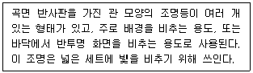
- 스트립조명
- 무빙라이트
- 스포트라이트
- 타원형 스포트라이트
(정답률: 50%)
49. 색온도 차이와 인간의 지각 사이의 문제를 해결하귀 위해 도입된 것으로 1,000,000을 색온도의 역수에 곱한 것은?
- Neper
- Diopter
- Mired
- Thomson
(정답률: 47%)
50. 다음 중 멀티미디어 타이틀 제작과정 순서로 올바른 것은?
- 분석 → 자료제작 및 입수(Production) → 디자인 → 시나리오 작성 → 저작(Authoring) → 테스트 → 분배
- 디자인 → 분석 → 시나리오 작성 → 자료제작 및 입수(Production) → 저작(Authoring) → 분배 → 테스트
- 분석 → 디자인 → 시나리오 작성 → 자료제작 및 입수(Production) → 저작(Authoring) → 테스트 → 분배
- 분석 → 디자인 → 시나리오 작성 → 자료제작 및 입수(Production) → 분배 → 저작(Authoring) → 테스트
(정답률: 45%)
51. 윈도우 운영체제에서 기본으로 지원하는 동영상 파일 포맷으로 비디오와 오디오 데이터가 번갈아 기록되는 파일은?
- MP3 파일
- AVI 파일
- GIF 파일
- JPEG 파일
(정답률: 60%)
52. IP 네트워크 상에서 구현되는 멀티미디어 융합서비스는 무엇인가?
- DMB
- CATV
- IPTV
- MATV
(정답률: 60%)
53. 화면 전환 효과에서 하나의 이미지가 다음 이미지로 전환될 때 이중으로 노출되어 이미지가 혼합되며 전환되는 것을 무엇이라 하는가?
- 커트(Cut)
- 디졸브(Dissolve)
- 와이프(Wipe)
- 페이드(Fade)
(정답률: 59%)
54. 다음 중 낮은 비트율의 오디오나 음성 부호화기의 성능을 개선하기 위해 주파수 영역의 고조파의 중복성(Harmonic Redundancy)을 주로 이용한 기술은?
- 디퍼런셜 부호화(Differential Coding)
- 마스킹 효과(Masking Effect)
- 스펙트럴 밴드 리플리케이션(Spectral BAnd Replication)
- 인트로피 부호화(Entropy Coding)
(정답률: 30%)
55. 다음의 오디오 코덱 중 동일 음질에서 압축률이 가장 높은 코덱은?
- MPEG1
- MUSICAM
- MP3
- AAC+
(정답률: 63%)
56. 반사음이 전혀 없는 자유음장에서 음언으로 부터의 거리가 두배가 되는 지점에서의 음압은 얼마나 낮아질까?
- 3[dB]
- 6[dB]
- 9[dB]
- 12[dB]
(정답률: 49%)
57. 우리나라 지상파 HDTV 화면의 종횡비(Aspect Ratio)는?
- 5:3
- 19:10
- 16:9
- 19:16
(정답률: 68%)
58. 다음 중 TV 자막방송인 클로즈트 캡션(Closed Caption)에 대한 설명으로 옳은 것은?
- 방송사에서 화면 위에 뉴스, 비디오, 영화 등의 글자를 넣어 누구나 볼 수 있는 방식
- 시청자가 자막을 보이거나 보이지 않게 선택할 수 있는 방식
- 생방송을 실시간으로 속기하여 내보내는 방식
- 녹화된 테이프에 자막을 삽입하거나 사전에 방송대본 등의 데이터를 입력해 보는 방식
(정답률: 52%)
59. 디지털 텔레비전 방송에서 방송편성표 및 프로그램 내용 등을 안내하는 기능을 무엇이라고 하는가?
- DLS(Dynamic Label Segment)
- EPG(Electronic Program Guide)
- NPAD(Non-Program Associated Data)
- FIC(Fast Information Channel)
(정답률: 61%)
60. 다음 중 HDTV 중계방송 차량에 설치되는 보편적인 시스템으로 틀린 것은?
- 8-VSB 송신기
- Video Encoder
- Video Mixing Unit
- UpDown Converter
(정답률: 18%)
4과목: 방송통신 시스템
61. 포락선 검파의 특징이 아닌 것은?
- 회로구성이 간단하다.
- DSB-LC 신호를 검파하는데 널리 사용된다.
- 검파된 파형을 저역통과필터에 통과시키면 불필요한 고조파 성분을 제거하기 힘들다.
- 복조하고자 하는 신호에 알맞은 시정수 선택이 중요하다.
(정답률: 55%)
62. 다음 중 가장 먼저 디지털 방송의 송출을 시작한 것은 어느 것인가?
- 지상파방송
- 위성방송
- 케이블방송
- 지상파 DMB
(정답률: 50%)
63. 다음 문장과 같은 조건의 반송파 주파수는?
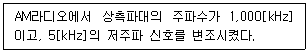
- 1,100 [kHz]
- 1,0⑤ [kHz]
- 1,000 [kHz]
- 995 [5]
(정답률: 41%)
64. 다음과 같은 조건의 수신기 한계레벨은?
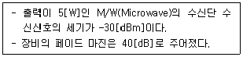
- -70[dBm]
- -47[dBm]
- -33[dBm]
- -27[7]
(정답률: 54%)
65. 다음 중 방송 프로그램을 저장하는 기기나 설비가 아닌 것은?
- VCR
- Hub
- 메모리 카드
- Blue-ray Disk
(정답률: 66%)
66. 다음 중 FM변조에서 원래신호의 최고주파수가 15[kHz]이고 최대주파수 편이가 75[kHz]인 경우 변조신호의 주파수 대역폭은?
- 10[kHz]
- 90[kHz]
- 180[kHz]
- 270[0
(정답률: 61%)
67. 다음 중 디지털 멀티미디어를 위한 디지털 라이도 방송시스템의 국제표준과 거리가 먼 것은?
- ITU-R BS.1114
- MPEG-7
- ARIB STD B.29
- ETSI 300 401
(정답률: 60%)
68. AM 송신기 회로에 있는 완충 증폭부에 대한 설명으로 틀린 것은?
- 부하변동에 따른 주파수 변동 방지를 위한 증폭기
- 주로 효율이 높은 B급 증폭 발진기를 사용한다.
- 주로 고주파 증폭기에 설치된다.
- 발진주파수의 변동을 방지한다.
(정답률: 63%)
69. 다음 텔레비전 송신설비 중 VHF 송신 안테나의 종류로 다이폴(Dipole) 안테나계에 해당되지 않는 것은?
- 슈퍼게인 안테나(Supergain Antenna)
- 투 다이폴 안테나(2 Dipole Antenna)
- 코너리플렉터 안테나(Coner Reflector Antenna)
- 라지 루프 안테나(Large Loop Antenna)
(정답률: 43%)
70. 다음 중 CATV시스템에서 중계증폭기의 특성을 나타내는 요소에 대한 설명으로 틀린 것은?
- 증폭에서 발생하는 잡음 및 왜곡을 최저로 하기 위해 증폭기의 입출력 신호레벨을 주파수로 변화 시키는 것을 틸트라 한다.
- 전송 대역에서 고역과 저역의 주파수 사이의 레벨 차이를 슬로프(Slope)라 하며 동축케이블 종류에 따른 경사차를 조정한다.
- 레벨변동을 자동으로 억제하고 제어하는 것을 AFC라 한다.
- 주파수왜곡과 위상왜곡을 보상하는 회로를 등화기라 한다.
(정답률: 30%)
71. 안테나의 이득을 절대이득(dBi)과 상대이득(dBd)으로 구분해 볼 수 있는데, 이중 상대이득이 5.5[dBd]인 경우 절대이득은 몇 [dBi]인가?
- 7.65[dBi]
- 8.55[dBi]
- 9.15[dBi]
- 11.22[dBi]
(정답률: 35%)
72. 다음 중 TV 방송 송신에서 영상 반송파와 음성 반송파가 서로 간섭되지 않도록 합성하는 장치로 옳은 것은?
- 영상 IF
- 공동 공진기
- CIN 다이플렉서
- 유도결합기
(정답률: 50%)
73. TV 프로그램 제작을 위한 영상 설비 중 여러 개의 영상신호를 합성하는 기기는 무엇인가?
- 영상스위치
- 벡터 스코프
- 프레임 싱크로나이져
- 탈리 시스템
(정답률: 50%)
74. 다음 보기의 조건에 따른 실효복사전력은 몇 [dBk] 인가?
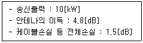
- 6.7
- 12.5
- 13.3
- 15
(정답률: 49%)
75. 정지궤도 위성은 적도 상공의 약 몇 [km] 떨어진 곳에서 원 궤도를 지구자전 주기와 동일하게 회전하는 위성인가?
- 10,000[km]
- 26,000[km]
- 36,000[km]
- 46,000[km]
(정답률: 63%)
76. 다음은 IPTV 인코더(Encoder)의 블록도이다. '가'~'라'에 대하여 순서대로 짝지은 것은?
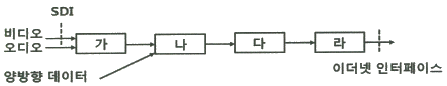
- 부호화, 다중화, 혼화, IP 패킷화
- IP 패킷화, 혼화, 다중화, 부호화
- 다중화, IP 패킷화, 혼화, 부호화
- 혼화, 부호화, IP 패킷화, 다중화
(정답률: 49%)
77. 지상파DMB 전송시스템에서 임펄스 잡음 등에 의한 오류를 분산시키기 위해서 16개의 논리프레임 구간에 적용되는 오류분산방법은?
- 시간인터러빙
- 주파수인터러빙
- 공간적인터러빙
- 랜덤인터러빙
(정답률: 23%)
78. 방송공동수신 안테나 시설에 해당되지 않는 것은?
- 수신안테나
- 분배기
- 신호처리기
- ONU
(정답률: 34%)
79. 다음 중 수퍼헤테로다인(SuperHeterodyne) 수신기의 특징으로 옳지 않은 것은?
- 고감도이다.
- 중간주파수로 변환한다.
- 선택도가 향상된다.
- 전원전압의 변동에 강하다.
(정답률: 36%)
80. 다음 중 종합 유선 방송국의 예비전원 설비는 전원 공급이 중단될 경우, 최대 부하를 기준으로 몇 시간 이상 공급할 수 있어야 하는가?
- 1시간 이상
- 2시간 이상
- 3시간 이상
- 4시간 이상
(정답률: 65%)
5과목: 전자계산기 일반 및 방송설비기준
81. 여러 개의 CPU로 구성된 시스템에서 동시에 여러 프로그램을 처리하는 것은?
- 일괄 처리(Batch Processing)
- 다중 프로그래밍(Multi Programming)
- 다중 태시킹(Multitasking)
- 다중 처리(Multiprocessing)
(정답률: 34%)
82. 주기억장치 관리에서 배치 전략(Placement Strategy)인 최초 적합(first-fit), 최적 적합(best-fit), 최악 적합(worst-fit)에 대한 설명으로 옳지 않은 것은?
- 최초 적합은 가용공간을 찾는 시간이 적어 배치결정이 빠르다.
- 최적 적합은 선택 후 남는 공간을 이후에 활용할 가능성이 높다.
- 최악 적합은 가용공간 크기를 정렬한 후 가장 큰 공간에 배치한다.
- 최악 적합은 가용공간 크기를 정렬해야하는 것이 단점이다.
(정답률: 35%)
83. 마이크로프로세서를 구성하는 요소 장치로 데이터 처리과저엥서 필수적으로 요구되는 것들로 올바르게 짝지어진 것은?
- 제어장치, 저장장치
- 연산장치, 제어장치
- 저장장치, 산술장치
- 논리장치, 산술장치
(정답률: 66%)
84. 병렬 프로세서의 한 종류로 여러 개의 프로세서들이 서로 다른 명령어와 데이터를 처리하는 진정한 의미의 병렬 프로세서로 대부분의 다중 프로세서 시스템과 다중 컴퓨터 시스템이 이 분류에 속하는 구조는?
- SISD(Single Instruction stream Single Data stream)
- SIMD(Single Instruction stream Multiple Data stream)
- MISD(Multiple Instruction stream Single Data stream)
- MIMD(Multiple Instruction stream Multiple Data stream)
(정답률: 58%)
85. 다음 중 연결 리스트(Linked List)에 대한 설명으로 틀린 것은?
- 연결 리스트는 데이터 부분과 포인터 부분을 가지고 있다.
- 포인터는 다음 자료가 저장된 주소를 기억한다.
- 삽입, 삭제가 쉽고 빠르며 연속적 기억 장소가 없어도 노드의 연결이 가능하다.
- 포안토 때문에 탐색 시간이 빠르고 링크 부분만큼 추가 기억 공간이 필요하다.
(정답률: 45%)
86. 다음 중 1회에 한해 사용자가 내용을 기록할 수 있는 롬(ROM)은?
- 마스크(mask) ROM
- PROM
- EPROM
- EEPROM
(정답률: 52%)
87. 2진수 11011을 그레이 코드로 변환한 것은?
- 11101
- 10110
- 10001
- 11011
(정답률: 45%)
88. 2진수 0.111의 2의 보수는 얼마인가?
- 0.001
- 0.010
- 0.011
- 1.001
(정답률: 31%)
89. 깊이가 5인 2진 트리로 가족관계를 표현하려고 한다. 최대 몇 명을 표현할 수 있는가?
- 31명
- 32명
- 63명
- 64명
(정답률: 38%)
90. 다음 중 BCD 코드 1001에 대한 해밍 코드를 구하면? (단, 짝수 패리티 체크를 수행한다.)
- 0011001
- 1000011
- 0100101
- 0110010
(정답률: 38%)
91. 다음 중 정보통신공사업법에서 말하는 공사의 종류 중 위성통신설비공사가 아닌 것은?
- 소형위성지구국(VSAT)설비
- 발사체설비
- 위성이동휴대전화설비
- SNG설비
(정답률: 31%)
92. 종합유선방송사업자(가입자 규모 : 3만 이상)의 종사자의 자격과 정원 중 옳은 것은?
- 방송통신산업기사 또는 정보통신기술자(초급이상) 2명이상
- 방송통신산업기사 또는 정보통신기술자(중급이상) 2명이상
- 방송통신기사 또는 정보통신기술자(초급이상) 2명이상
- 방송통신기사 또는 정보통신기술자(중급이상) 2명이상
(정답률: 38%)
93. 다음 중 중계유선방송사업·음악유선방송사업을 할 수 없는 경우가 아닌 것은?
- 외국인 또는 외국의 정부나 단체
- 파산선고를 받은 자로서 복권된 자
- 미성년자 또는 한정치산자
- 허가 또는 등록이 취소된 후 2년이 경과되지 아니한 자
(정답률: 45%)
94. 유선방송국에서 텔레비전 방송신호를 수신하기 위한 수신설비가 아닌 것은?
- 수신안테나
- 케이블
- 증폭장치
- 전원장치
(정답률: 55%)
95. 종합유선방송국 설비의 기술적 조건에 대한 사항 중 틀린 것은?
- 종합유선방송국이 사용할 수 있는 대역내 주파수 대역은 5.75[MHz]부터 1,002[MHz]까지이다.
- 영상신호의 휘도신호와 색차신호의 표본당 비트수는 4비트로 한다.
- 디지털채널의 변조방식 및 전송조건 등은 「디지털 유선방송 송수신 정합」표준을 따른다.
- 아날로그 종합유선방송국의 주 전송장치의 전송방식은 진폭변조 방식으로 한다.
(정답률: 40%)
96. 방송법에서의 정의한 방송의 형태가 아닌 것은?
- 텔리비젼방송
- 라디오방송
- 이동전화방송
- 데이터방송
(정답률: 29%)
97. 다음 중 전파법상의 '위성방송업무'란?
- 공중이 직접 수신하도록 할 목적으로 인공위성의 송신설비를 이용하여 송신하는 무선통신업무
- 공중이 간접 수신하도록 할 목적으로 인공위성의 송신설비를 이용하여 송신하는 무선통신업무
- 공중이 직접 수신하도록 할 목적으로 인공위성의 송신설비를 이용하여 수신하는 무선통신업무
- 공중이 간접 수신하도록 할 목적으로 인공위성의 송신설비를 이용하여 수신하는 무선통신업무
(정답률: 40%)
98. 유선방송국 설비 등에 관한 기술기준 중 전원설비에 대한 규정으로 가장 적합한 것은?
- 전원설비는 최대로 사용되는 때의 전력을 안정적으로 공급할 수 있는 용량을 가진 것으로서 전압, 전류의 변동 허용 범위는 ±1[%] 이내로 유지할 수 있는 것이어야 한다.
- 전원설비는 최대로 사용되는 때의 전력을 안정적으로 공급할 수 있는 용량을 가진 것으로서 전압, 전류의 변동 허용 범위는 ±10[%] 이내로 유지할 수 있는 것이어야 한다.
- 전원설비는 최대로 사용되는 때의 전력을 안정적으로 공급할 수 있는 용량을 가진 것으로서 전압, 전류의 변동 허용 범위는 ±20[%] 이내로 유지할 수 있는 것이어야 한다.
- 전원설비는 최대로 사용되는 때의 전력을 안정적으로 공급할 수 있는 용량을 가진 것으로서 전압, 전류의 변동 허용 범위는 ±30[%] 이내로 유지할 수 있는 것이어야 한다.
(정답률: 54%)
99. 다음 중 방송사업자가 변경하고자 할 때 변경허가, 승인, 등록사항이 아닌 것은?
- 당해 법인의 합병
- 방송구역의 변경
- 대표자의 변경
- 방송분야의 변경
(정답률: 47%)
100. 다음은 국선단자함의 설치 및 관리에 대한 규정이다. 잘못된 것은?
- 사업자는 국선을 수용하기 위한 단자 및 보호기를 국선단자함에 설치하여야 한다.
- 국선단자함을 세면실이나 화장실에 설치할 경우 단자함의 하부는 바닥으로부터 10[cm] 이상 이격되어야 한다.
- 사업자는 보호기를 설치하는 경우 국선단자함에서 보호기를 통하여 국선과 이용자 구내케이블간의 회선접속을 하여야 한다.
- 국선단자함은 관로의 분계점과 가장 가까운 곳에 설치하여야 한다.
(정답률: 43%)